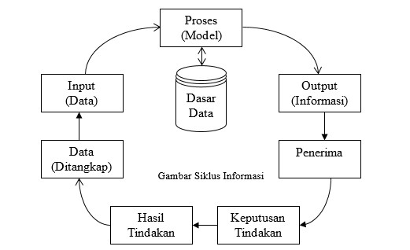

Materi Sistem Informasi Pertemuan 1
Artikel kali ini kita akan membahas tentang Konsep Dasar Sistem Informasi. artikel ini dibuat untuk memenuhi tugas kuliah Saya di semester 3 pada mata kuliah Sistem Informasi. Baiklah langsung saja ke materi.
I. Konsep Dasar Sistem
Definisi Sistem
Sistem itu sendiri adalah Kumpulan unsur-unsur yang saling berinteraksi satu dengan yang lain untuk menghasilkan tujuan.
Karakteristik Sistem
-
Komponen Sistem
Suatu sistem terdiri dari sejumlah komponen yang saling berinteraksi yang berarti saling bekerja sama membentuk satu kesatuan.
-
Batas Sistem
Batas sistem merupakan daerah yang membatasi antara suatu sistem dengan sistem yang lainnya atau dengan lingkungan luarnya.Batas sistem merupakan daerah yang membatasi antara suatu sistem dengan sistem yang lainnya atau dengan lingkungan luarnya.
-
Lingkungan Luar Sistem
Lingkungan luar dari suatu sistem adalah apapun diluar batas dari sistem yang mempengaruhi operasi sistem. Lingkungan luar sistem dapat bersifat menguntungkan dan merugikan.
-
Penghubung Sistem
Penghubung sistem merupakan media penghubung antara satu subsistem dengan subsistem yang lain.
-
Keluaran Sistem
Keluaran sistem adalah hasil dari energi yang diolah dan diklasifikasikan menjadi keluaran yang berguna dan sisa pembuangan.
-
Pengolah Sistem
Suatu sistem dapat mempunyai suatu bagian pengolahan yang akan merubah masukan menjadi keluaran.
-
Tujuan Sistem
Suatu sistem pasti mempunyai tujuan. Kalau suatu sistem tidak mempunyai tujuan, maka operasi sistem tidak akan ada gunanya.
Klasifikasi Sistem
Sistem dapat digolongkan menjadi beberapa jenis yaitu:
-
Sistem Abstrak X Sistem Fisik
Sistem abstrak adalah sistem yang berupa pemikiran atau ide-ide yang tidak tampak secara fisik. Contoh : Sistem Teologi yang menerangkan hubungan manusia dengan Tuhan.
-
Sistem Komputer X Sistem Buatan Manusia
Sistem alamiah adalah sistem yang terjadi melalui proses alam tidak tidak dibuat oleh manusia. Contoh pada sistem alamiah: sistem peredaran bumi. Sedangkan sistem buatan manusia adalah sistem yang dirancang oleh manusia. Contoh: sistem robotika
-
Sistem Deterministik X Sistem Probabilistik
Sistem deterministik adalah sistem yang berinteraksi antara bagiannya yang dapat diprediksi secara pasti. Contoh: sistem komputer. Sedangkan sistem probabilistik adalah sistem yang tidak bisa diprediksikan secara pasti. Contoh: sistem manusia
II. Konsep Dasar Informasi
Apa itu Informasi ?
Informasi adalah Data yang diolah menjadi bentuk yang lebih berguna bagi penerimanya.
Siklus Informasi
Mutu Informasi
Kualitas Informasi tergantung dari 3 (tiga) hal:
- Informasi harus Akurat: informasi harus terbebas dari kesalahan-kesalahan, tidak bias dan tidak menyesatkan
- Informasi harus tepat waktu: informasi yang datang kepada penerimanya tidak boleh mengalami keterlambatan.
- Informasi harus relevan: informasi memiliki menfaat bagi penerimanya
Nilai Informasi ditentukan oleh 2 (dua) hal:
- Manfaat dari informasi tersebut
- Biaya untuk mendapatkan informasi
III. Konsep Dasar Sistem Informasi
-
Definisi Sistem Informasi
Suatu sistem di dalam suatu organisasi yang mempertemukan kebutuhan pengolahan transaksi harian, mendukung operasi, bersifat manajerial dan kegiatan strategi dari suatu organisasi dan menyediakan pihak luar tertentu dengan laporan-laporan yang diperlukan.
-
Peranan Sistem Informasi bagi Manajemen
- Dapat Mendukung dalam pengambilan keputusan
-
Dapat mendukung kegiatan manajemen
Yang termasuk dalam kegiatan manajemen adalah:
-
Perancangan Strategis
- Proses evaluasi lingkungan luar organisasi : harus mampu bereaksi terhadap kesempatan-kesempatan dari lingkungan luar dan tanggap terhadap tekanan-tekanan dari lingkungan luar.
- Tujuan adalah apa yang ingin dicapai oleh organisasi. Tujuan ditetapkan oleh manajemen tingkat atas di dalam proses perencanaan strategis yang bersifat jangka panjang
- Menentukan tindakan-tindakan yang harus dilakukan oleh organisasi dengan maksud untuk mencapai tujuan-tujuannya
-
Pengendalian Manajemen
Yaitu proses untuk meyakinkan bahwa organisasi telah menjalankan strategi yang sudah ditetapkan dengan efektif dan efisien
-
Pengendalian Operasi
Yaitu proses untuk meyakinkan bahwa tiap-tiap tugas tertentu telah dilaksanakan secara efektif dan efisien
-
Perancangan Strategis